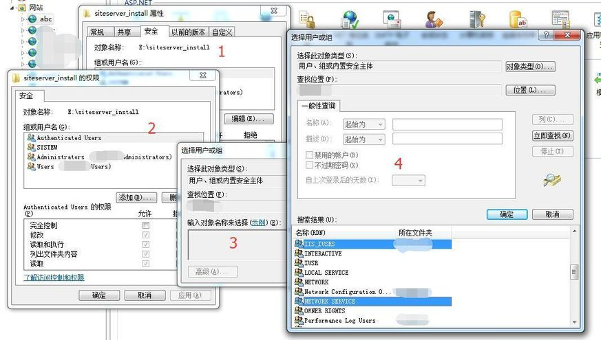

安装SiteServer CMS时，如果在环境检测界面，如果出现提示文件夹读写权限不够的话，如下图所示：

此时需要按照以下步骤赋予网站根目录相应权限：

如上图所示： 1、打开IIS，选中相应站点名称（此例是abc）； 2、右键弹出菜单，选择“编辑权限”，切换到“安全”选项卡； 3、点“编辑” --> “添加” --> “高级” --> “立即查找”； 4、选中IIS_IUSER和NETWORK_SERVICE，点“确定”； 5、在退回到“编辑”界面时，如下图所示，需要对刚才添加两个用户别赋予“完全控制”权限；
通过以上设置之后，再次进入环境检测界面，应该会出现如下图所示效果：
此时表示环境检测已经通过。一般出现提示文件夹权限不够的相关问题都可以此类方法解决。